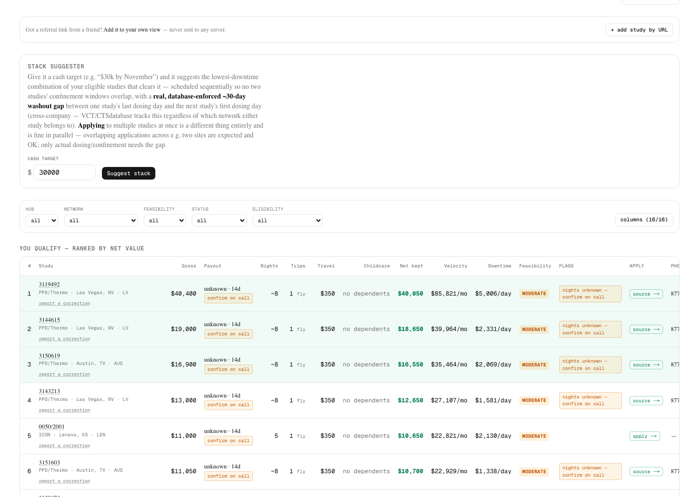

Rank paid clinical trials by what you actually keep.
Paid Phase-1 / healthy-volunteer study listings sort by the headline "up to $" figure and hide the eligibility gate until you've already wasted a screening trip. This tool ranks the same public listings by net cash kept, cash velocity, and downtime — using your own BMI, home base, and backup-care situation, not a generic average.

The headline number lies
A $30k study that pays out over 6 months is worse bridge cash than a $15k study that settles
in one month. A $22k study in a city with no childcare can net less than a $6.6k study a
friend lives 20 minutes from. The engine (lib/scoring.ts) does that math for
every listing, live, as you tune the inputs.
What's in it
Built and iterated against real, live-pulled study data from ICON, PPD/Thermo, Fortrea, Altasciences, Celerion, and other CRO networks.
Editable profile, real eligibility
Set your own BMI, weight, sex, age, and smoker status — the ranked list and the blocked list both re-filter instantly against your real numbers, not a hardcoded example.
Application & chase tracking
A separate pipeline view for studies you've actually applied to: status, next action, tap-to-call, business-hours awareness, and a call-log that writes confirmed nights/payout/washout back into the ranking.
Community corrections
A levels.fyi-style crowdsourced correction layer — no manual review gate. Conflicting reports show as disputed and transparent; agreement locks in confidence over time.
Stack suggester
Give it a cash target and it suggests the lowest-downtime combination of your eligible studies that clears it, respecting a real washout gap between dosing windows.
Shareable, never stored
No sign-in, no server-side database. Your profile and settings live in your own browser's localStorage; a "share this view" link encodes your inputs into the URL itself.
Network directory
A directory of the CRO networks the seed data is pulled from, plus links out to community resources like JALR for broader discovery.